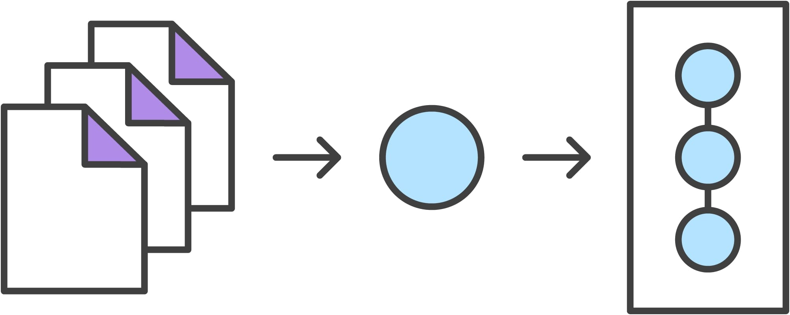

Git
Throughout the course we will be using Github to publish our website and collaborate on projects. We will each have a local repository where we store the website on our computers, and a remote or global repository where we 'push' our local repository in order to share it with the world. Github is a distributed VCS (Version Control System) which means that every developer has a copy of the repository on their local computers. VCSs helps you store your code, manage the history of your work, synchronise work with various computers, collaborate with other developers, and manage content on a server remotely.
I used this tutorial to learn what GIT is and its workflow. The following are a few concepts that are necessary to understand GIT:
- repository: A GIT repository is a virtual storage of your project. It allows the developer to store versions of your code, which you can access anytime.
- local and remote: A local repository means that it's stored locally, in your computer. A remote repository is stored elsewhere, in this case it would be the cloud. This way you can access your code even if you don't have your computer.
- add: Adding helps you keep track of the changes you make to your project locally, which helps you backtrack if something goes wrong. A newly created file is not automatically added to the staging area (the index for example), preparing them to be added to the next git commit
- commit: Git commit is synonymous with the traditional software expression of 'saving'. After you're happy with the staging area after using git add, you commit it to the project using git commit
- master and branches: A 'master' branch is the main copy of the code, it is to this branch that all code being written in different branches will eventually be merged, and it will represent the current released version of the project.
- clone: Cloning a repository means getting the latest up to date copy in order to work with it locally
- push: This means 'pushing' the committed changes back into the repository, in order to make them avaialable to other developers.
- pull: Pulling is the opposite of pushing, you're retrieving the latest copy with the changes pushed by others.
Developing a project revolves around the basic edit-stage-commit pattern.
- First you edit your files in your working directory
- When you're ready to save a copy of the current state of your project, you stage changes with git add .
- Once you're done saving the changes, commit them to the project history with git commit -m "commit message here", git reset is used to undo a commit
- Then you use git push to send the committed changes to remote repositories for collaboration, enabling other members to access a set of saved changes. 
Now that we know what's going on let's set up Git
The first step is to install Git, for windows users they should use Gitbash. Our website will be stored on Github, where a default website is already created for each of us. In order to edit the website, a local repository needs to be created. Let's clone the current global repository onto our local computer!
To clone the global repository into the local folder where you want the file to be located, change the directory through Command Prompt by typing cd Users/name/location.
Once you've located the folder, type in git clone with your address (can be found on your global repository).
Now, we'll add a username and set our email on Gitbash
In order to push your updated content onto a Github server, you will need a secure communication channel for sharing information, so you'll need an SSH Key.
To create a SSH key, I typed in ssh-keygen -t rsa -C ''your.email@example.com'' -b 4096 and followed the instructions
Once the key has been generated, I copied my key by typing pbcopy < ~/.ssh/id_rsa.pub and imported it unto the SSH Key tab under Settings on Gitlhub
Web Development
We've used three main web development codes to build this website. HTML (structure and content), CSS (design), and Javascript (page behaviour and effects).
I will be using bracket to write the website.
Bracket is a very style-friendly tool, since it allows live view of your website once you have saved your new changes with just one click.
The basic structure of a HTML website comes as:
< !DOCTYPE html>
< html>
< head>
< title> abc < /title>
< /head>
< body>
< h1> heading < /h1>
< p> paragraph < /p>
< /body>
< /html>
< /pre>
< br>
CSS can be embedded in three different ways:
inline: style attribute for single HTML elements inside
< body>< h1 style=''color:blue;margin-left:30px''> < /h1>
internal: using
< style> < /style>
external: at the beginning of a website, include
< link rel=''stylesheet''>
One strategy I use to make a website is to look at the HTML code of existing websites (right-click-> page source on Google Chrome). It helps me to have a starting point with layout. Then, I referred to HTML and CSS references on W3schools.com in helping me with formatting and enriching the website.
I've used a bootstrap template with a pre-made design that has helped me not only fast forward my work, but also learn a lot from the way they'd write down commands and the effects they would have on the design.
Under style.css, I can change font and color, margin size for headers, paragraphs and lists, image formating and footers formatting, background color collectively, instead of making style changes each time manually.
Notable Past Fab Academy Representation
For this week‘s homework, I went through past documentations of the Fab Academy I found particularly interesting. In the following I want to highlight three examples and what stand out for me about them.